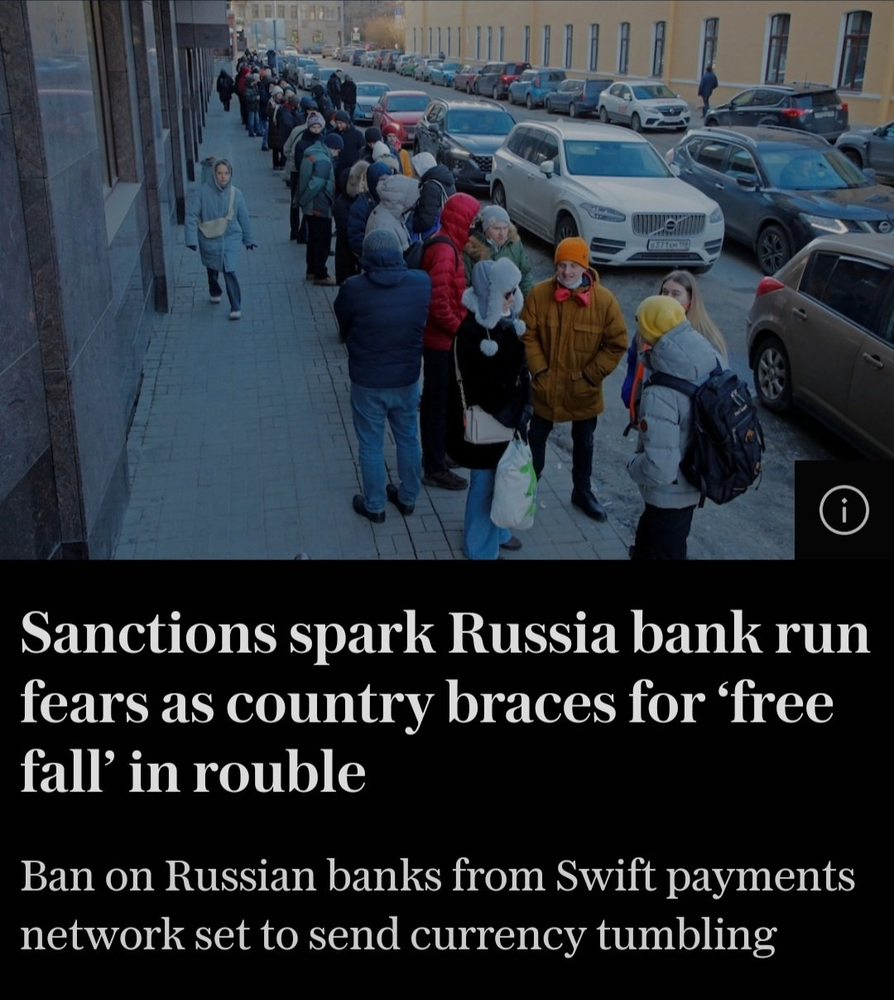

Bitcoin als
freiheitliches Geldsystem
Geld ist neben Sprache das wichtigste (Aus)tauschmedium
Geld wird digital
Staatliche Zentralbank-Digitalwährungen (CBDC)
Privatwirtschaftliche Initiativen (Diem)

Ein offener Markt und
„Das Geld der Leute“

Transparenz und Partizipation
Offenheit und Innovation
Selbstbestimmung und Freiheit
Transparenz und
Partizipation

Offenheit und
Innovation


Freiheit und Selbstbestimmung


Wohin geht
die Reise?
I’m sure that in 20 years
there will either be very
large transaction volume
or no volume.
Satoshi Nakamoto